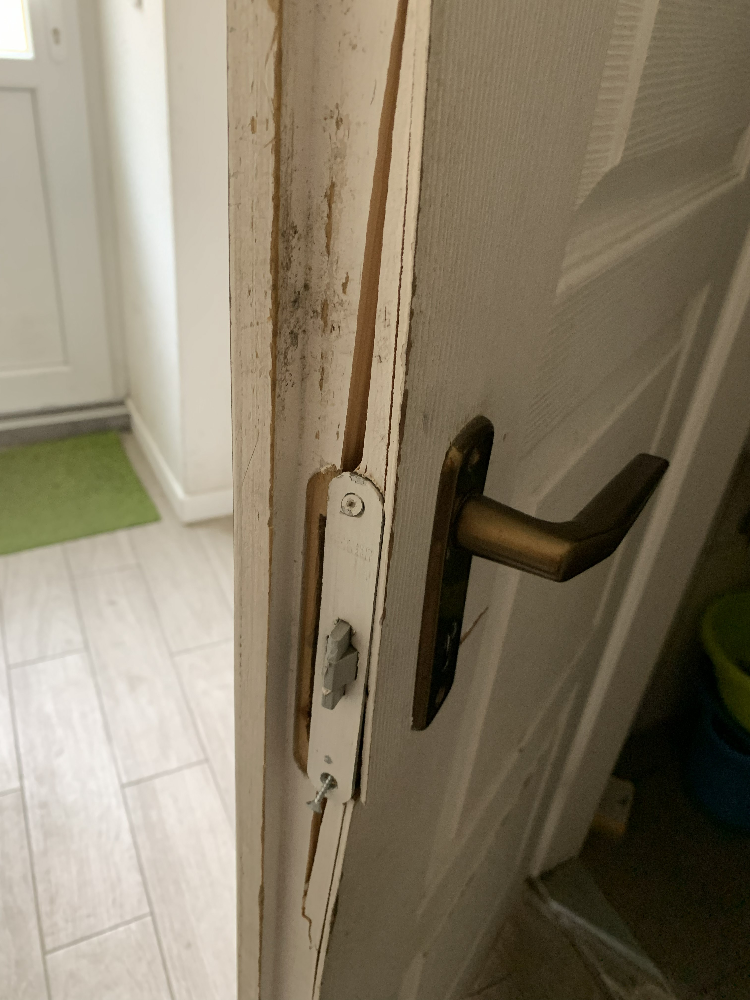
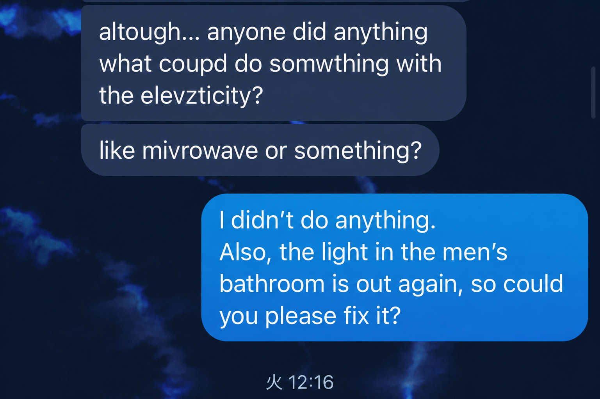
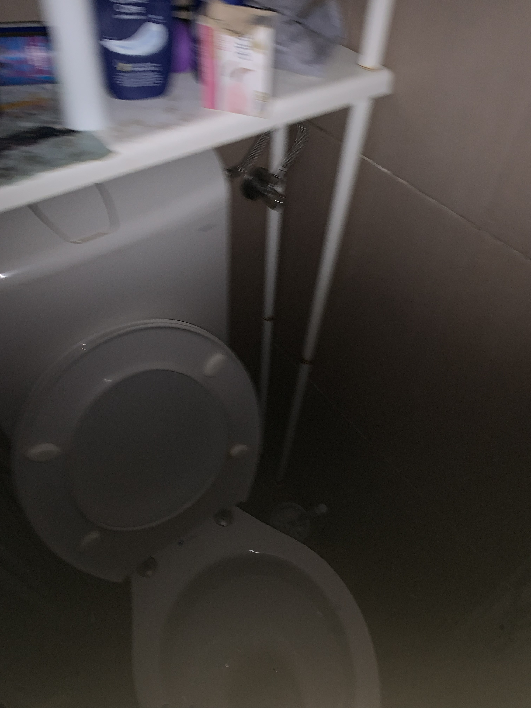
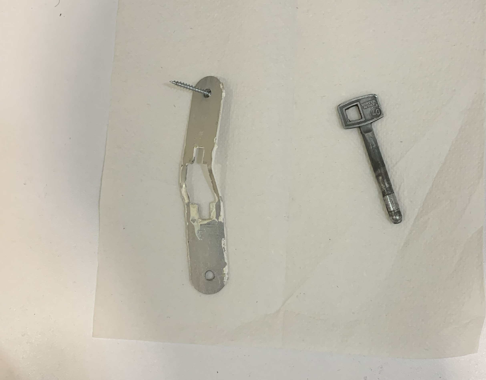
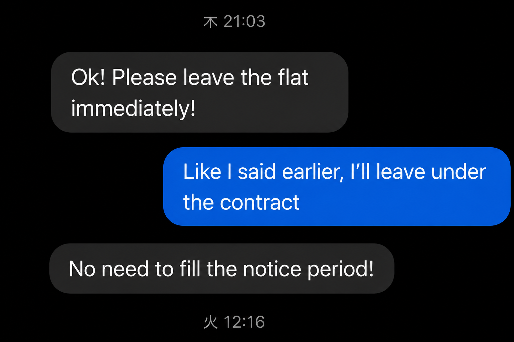
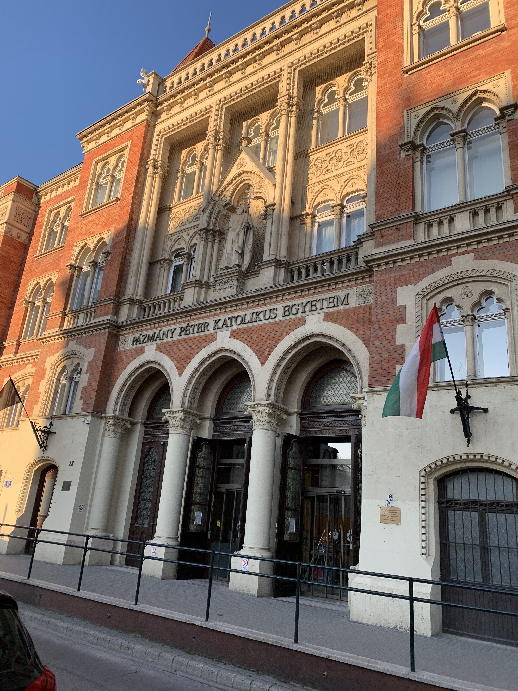
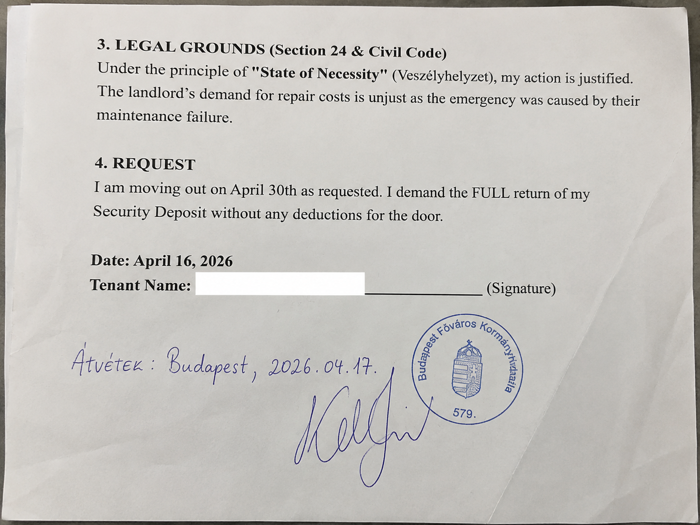

突然、鍵が変えられていた。ハンガリーで大家と大トラブルになった話
こんにちは。ハンガリー留学ラボのカネコです。
以前のコラムでは、ブダペストでなかなか部屋が見つからず、約1か月間ホステルで生活しながら家探しをした話を書きました。
何十件も問い合わせを続け、ようやく見つけた部屋。
「これでやっと落ち着いて暮らせる」
そう思っていました。
ところが、その部屋でも新たな問題が待っていました。
大家との関係が少しずつ悪くなり、最終的には住む場所を失うことになります。
今回は、ハンガリーで個人の大家と直接契約した私が経験した賃貸トラブルについて書きたいと思います。
入居してすぐ、清掃費を請求された
私が借りた部屋は6か月契約で、入居時には家賃2か月分のデポジットを支払いました。
約1か月のホステル生活を経て、ようやく見つけた部屋です。
ところが、入居して間もない頃、大家からこんなことを言われました。
「部屋が汚いので、掃除スタッフを雇います。その費用を払ってください」
正直、「なんで私が？」と思いました。
私はまだ入居したばかりです。
入居前からあった汚れまで、私が清掃費を負担するのはおかしいと思いました。
そのため、「これまで住んでいた人が汚したものなら、私が払うのはおかしくないですか？」と伝え、支払いを断りました。
私としては当然のことを言ったつもりでした。
ただ、今振り返ると、この頃から大家との関係は少しずつ悪くなっていたように思います。
契約更新を前に、家賃値上げの話も
その後、6か月の契約が終わる時期が近づいてきました。
大家は、次の契約では家賃を上げたいようでした。
一方で、私はまだ現在の条件で契約して住んでいます。
さらに、大家には家賃2か月分のデポジットを預けていました。
清掃費の件など、それまでのやり取りもあり、私は当時、「家賃を上げたいことや、デポジットを返したくないことも関係しているのではないか」と感じていました。
もちろん、これはあくまで当時の私がそう感じていたということで、大家が実際にどう考えていたのかは分かりません。
そんな中、決定的な出来事が起きました。
夜11時、真っ暗なトイレに閉じ込められた
その日は大学が遅くまであり、家に帰ってきたのは夜11時ごろでした。
大学から帰ったばかりで疲れていましたし、お腹も空いていました。
とりあえずトイレに入ったのですが、電気がつきません。
実は、この電気については以前から不具合があり、「トイレの電気がつかないので直してほしい」と大家へメッセージを送っていました。

しかし、直らないままになっていました。

その日も真っ暗なトイレで用を済ませ、外へ出ようとしました。
ドアが開きません。
何度やっても開かない。
どうやら、今度はドアの鍵が壊れてしまったようでした。
しかも、そのときアパートには私以外、誰もいませんでした。
夜11時。電気のつかないトイレ。大学帰りで疲れている。お腹も空いている。それなのに、外へ出られない。
「これ、明日までトイレに閉じ込められるのかよ……」
さすがに焦りました。
大家に連絡しても出ない
すぐに大家へ電話しました。
出ません。
メッセージも送りましたが、返事はありません。
誰かが来るのを待つことも考えましたが、その日のうちに誰かが帰ってくるのかすら分かりません。
翌日も大学があります。
このまま朝までトイレの中にいるわけにもいきません。
結局、ドアを壊して出るしかありませんでした。
もちろん、好きで壊したわけではありません。
鍵が壊れて閉じ込められ、アパートには誰もおらず、大家にも連絡がつかない。
どうにかして外へ出る必要がありました。
なんとかドアを壊して脱出。
そのときは、「やっと出られた……」という気持ちでした。

しかし、この出来事をきっかけに、大家との関係は決定的に悪化しました。
大家が激怒。「すぐに出ていけ」
ドアを壊したことを知った大家は激怒しました。
そして、「すぐに出ていけ」と言われました。

私としては納得できませんでした。
トイレの電気については以前から修理をお願いしていましたし、閉じ込められたときにも連絡しています。
それでも連絡がつかず、外へ出るためにドアを壊したからです。
しかし、大家との話はまとまりませんでした。
そして、その後さらに驚くことが起きました。
家賃を払った直後、部屋の鍵が変えられていた
私は、その月の家賃を支払ったばかりでした。
当然、そのまま部屋で生活するつもりでした。
ところが、その直後。
ある日家に戻ると、部屋の鍵が変えられていました。
自分の鍵では、もう部屋に入れません。
さらに、私の荷物の一部は家の外に出されていました。
家賃を払ったばかりなのに、自分が住んでいた部屋に突然入れなくなっていたのです。
しかも、すべての荷物が外に出されていたわけではありません。
貴重品などが入ったスーツケースや、普段着ていた服の多くは、まだ部屋の中に残っていました。
当然、中にある荷物も取り出せません。
そして、入居時に預けていた家賃2か月分のデポジットも、結局返ってきませんでした。
服も取り出せず、1か月近くほぼ同じ格好に
困ったのは、お金だけではありませんでした。
服の多くも部屋の中に残ったままでした。
そのため、その後1か月近く、ほとんど同じ服で生活することになりました。
海外留学に来て、まさか住む場所だけでなく、着替えにまで困ることになるとは思っていませんでした。
「これはさすがに、どこかに相談しないといけない」
そう思い、私はハンガリーの消費者保護の窓口へ相談することにしました。
消費者保護の窓口へ相談した

窓口で事情を説明すると、担当してくれた方から、「こういうことはよくある」と言われました。
「え、これってよくあることなの？」
正直、驚きました。
少なくとも、私が相談した担当者にとっては、こうした個人大家とのトラブルは珍しい話ではないようでした。

ただ、ここで問題になったのが、私の契約相手です。
今回、私は不動産会社ではなく、個人の大家と直接契約していました。
私が相談した窓口では、事業者との消費者トラブルとは異なり、今回のような個人間の問題には対応できないということでした。
争うのであれば、裁判などの法的手段を検討することになります。
外国で、外国語を使って、時間と費用をかけて裁判をする。
留学生の私にとって、簡単に選べる方法ではありませんでした。
よりによって、大学は試験期間
そして、この時期は大学の試験期間でした。
住む場所を失った私は、仕方なく再びホステルで生活することになりました。
大家との問題は残っている。服を含めた荷物も戻ってこない。それでも試験は待ってくれません。
ホステルで生活しながら、試験勉強を続けました。
これが本当にきつかったです。
それでも、ここで単位まで落としたくありませんでした。
なんとか勉強を続け、幸い、5月末までにすべての試験に合格することができました。
再試験もなく、追加のプレゼンもありませんでした。
早めにすべての試験を終えることができたので、5月末に一度日本へ帰国しました。
ちょうど大学も夏季休暇に入る時期。
あのタイミングで日本へ帰れたのは、本当に助かりました。
次は、アパートを借りないことにした
日本へ帰ってから、「次にハンガリーへ戻ったら、どこに住もう？」と考えました。
またアパートを探すこともできます。
でも、今回のトラブルを経験した直後です。
すぐにまた個人の大家と契約する気にはなれませんでした。
そこで思い出したのが、以前、一時的に泊まったことのあるホステルです。
実際に泊まったことがあり、清潔で安心できる場所でした。
長期滞在の料金を調べてみると、朝食付きで2か月約10万円。
「もう、ここでいいんじゃないか」
と思いました。
そこで私は、次にハンガリーへ戻ったら、しばらくこのホステルを拠点に暮らすことにしました。
この経験から伝えたいこと
もちろん、個人の大家がすべて危険というわけではありません。
ただ、海外で個人の大家と直接契約するなら、私は次の点を契約前に確認しておくことをおすすめします。
- デポジットの金額と返還条件
- 契約期間と更新条件
- 清掃費や修理費を誰が負担するのか
- 設備が壊れた場合の対応
- 退去に関する条件
- トラブルになった場合の相談先
そして、入居したら最初に部屋の状態を写真や動画で残しておくこと。
設備の不具合を大家へ伝えるときも、口頭だけではなく、メールやメッセージなど記録が残る方法で連絡する。
今回、私もトイレの電気について事前に大家へ送ったメッセージが残っていました。
海外で部屋を借りるときは、家賃や立地だけではなく、「誰から、どんな条件で借りるのか」まで確認する。
これが、今回の経験から一番伝えたいことです。
そして正直に言えば、この出来事を今振り返っても、はらわたが煮えくり返るくらい腹が立ちます。
家賃を払った直後に鍵を変えられ、2か月分のデポジットも返ってこない。服や貴重品まで取り出せず、試験期間中に突然ホステル生活へ戻ることになりました。
当時は本当に最悪でした。
ただ、せっかくこんな経験をしたので、今回は一つのコラムのネタとして昇華させてもらいました。
これからハンガリーへ留学する方が、私と同じような目に遭わないための参考になれば、少しはこの経験にも意味があったと思います。